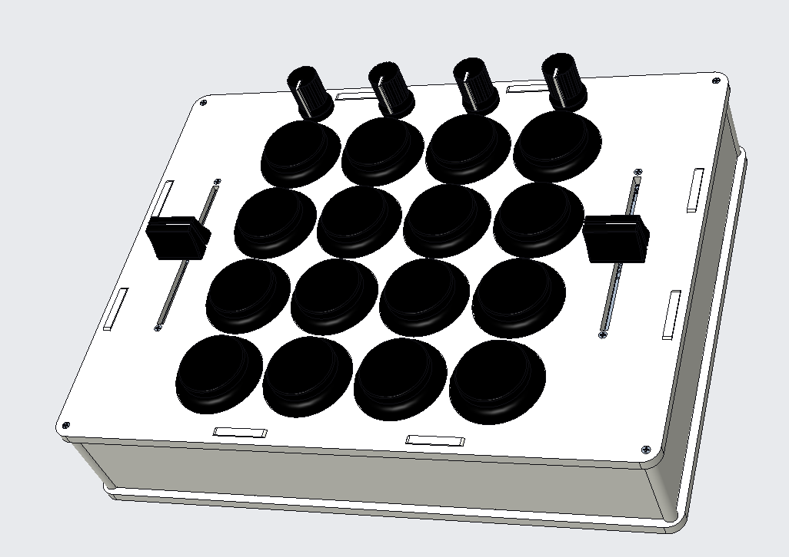
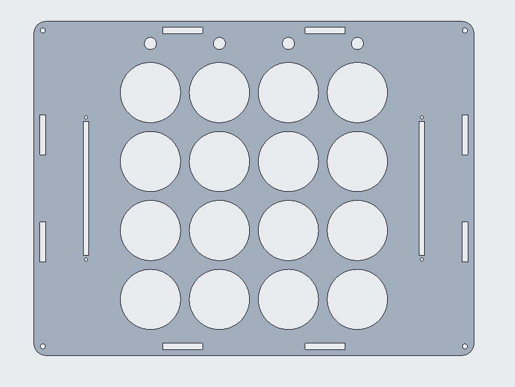
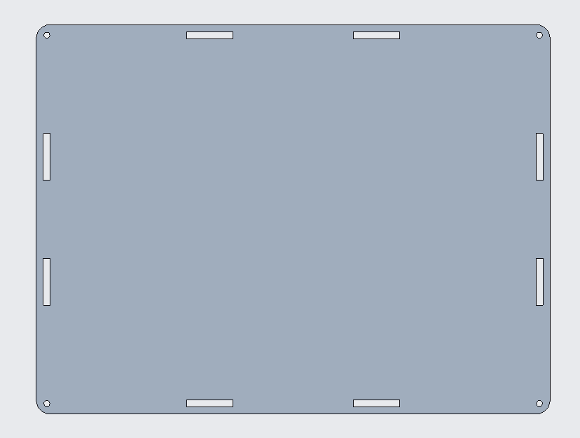
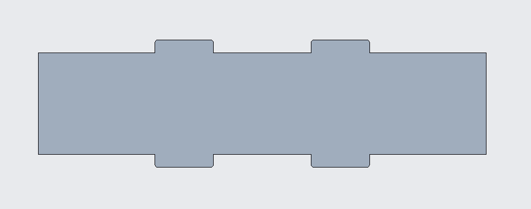
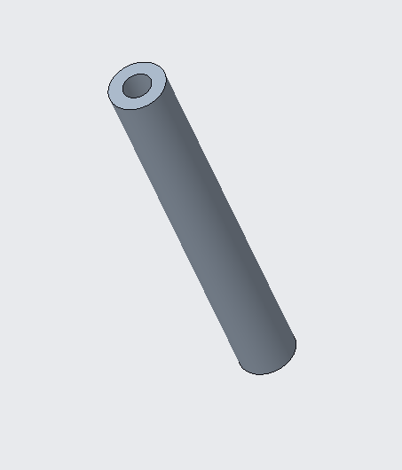
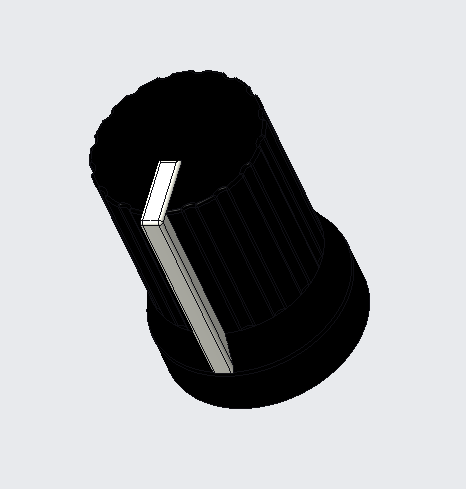
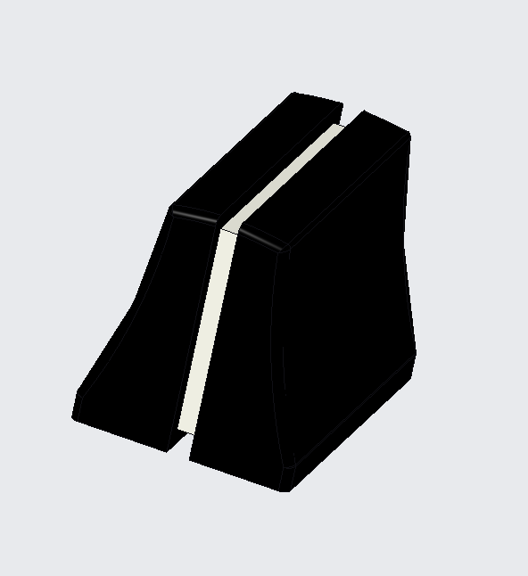

A MIDI controller is a deivce that... The goal of this project was to design a new mechanical or electro-mechanical product. The product had to have several moving parts (i.e. a mechanism) and be our own design. It also had to have something new or different about it; as innovation was a portion of the grade.
The goal of this project was to design a new mechanical or electro-mechanical product. The product had to have several moving parts (i.e. a mechanism) and be our own design. It also had to have something new or different about it; as innovation was a portion of the grade.
The goal of this project was to design a new mechanical or electro-mechanical product. The product had to have several moving parts (i.e. a mechanism) and be our own design. It also had to have something new or different about it; as innovation was a portion of the grade.
The panels fit into the designated holes on the outer edges of the top and bottom panels. These act as a way to support the top and bottom panels, as well as a way to hide the internal components and wiring. The back panel has a hole for the USB port of the Arduino Uno.
The connectors attach to both the top annd bottom panels at each of the four panels. They screw in on the top and bottom to ensure the panels do not come apart when lifting or moving the MIDI controller.
The knob is attahced to a rotary potentiometer. The rotary potentiometer can be used to add and control different affects to sounds. One may choose to map reverb, distortion, or delay to these. They can also be used to adjust the volume of different sounds.
The slider is attahced to a slider potentiometer. Much like the purpose of the knob, this slider can be programmed to control and adjust parameters such as volume, reverb, as well as be used to EQ sounds.
The CAD files and other information on the parts used in this project can be found on my GitHub.